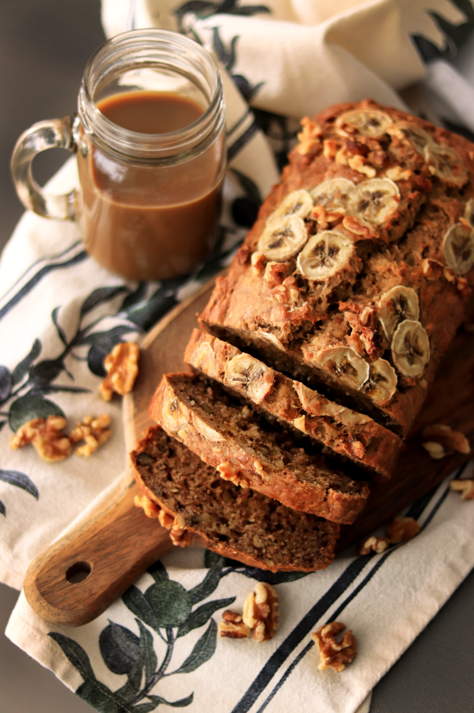

Bananna Bread

This banana bread recipe creates the most delicious,
moist loaf with loads of banana flavor. Why compromise
the banana flavor? Friends and family love my recipe and
say it's by far the best! It tastes wonderful toasted.
Enjoy!
Ingredients
- Flour: All-purpose flour gives the banana bread structure.
- Baking soda: Baking soda acts as a leavener, which means it helps the banana bread rise.
- Salt: A pinch of salt enhances the overall flavor, but it won't make the loaf taste salty.
- Butter: A stick of butter lends richness, moisture, and irresistible flavor.
- Brown sugar: Brown sugar sweetens things up and adds a hint of warmth.
- Eggs: Eggs act as a binding agent, which means they hold the batter together.
- Bananas: Of course, you'll need bananas! Choose overripe bananas.
Steps
- Preheat the oven to 350 degrees F (175 degrees C). Lightly grease a 9x5-inch loaf pan.
- Combine flour, baking soda, and salt in a large bowl. Beat brown sugar and butter with an electric mixer in a separate large bowl until smooth. Stir in eggs and mashed bananas until well blended. Stir banana mixture into flour mixture until just combined. Pour batter into the prepared loaf pan.
- Bake in the preheated oven until a toothpick inserted into the center comes out clean, about 60 minutes. Let bread cool in pan for 10 minutes, then turn out onto a wire rack to cool completely.